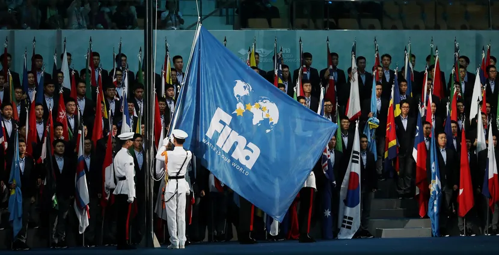

GENEL BAKIŞ
Haziran 2021'den bu yana, Husain Al Musallam'ın başkanlığındaki FINA, beş kıtada 209 Ulusal Üye Federasyondan oluşmaktadır.

ETKİNLİKLER
Bugün, FINA aşağıdaki su olaylarının gelişimini kontrol etmektedir:
- Yüzme: serbest, sırtüstü, kurbağalama, kelebek, karışık, bayrak yarışı, karışık bayrak yarışı.
- Su Topu: erkekler ve kadınlar.
- Dalış: sıçrama tahtası (1m, 3m), platform (10m), senkronize dalış (3m ve 10m), karma ve takım yarışmaları.
- Artistik Yüzme: solo, düet, karışık düet, takım ve serbest kombinasyon.
- Yüksek Dalış: erkekler (27m) ve kadınlar (20m).
- Açık Suda Yüzme: 5km, 10km, 25km, takım etkinliği.